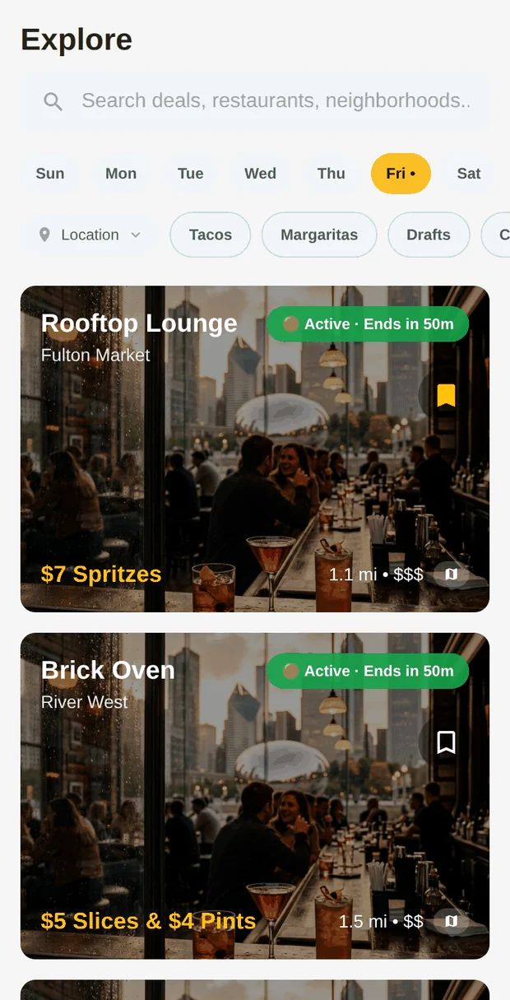
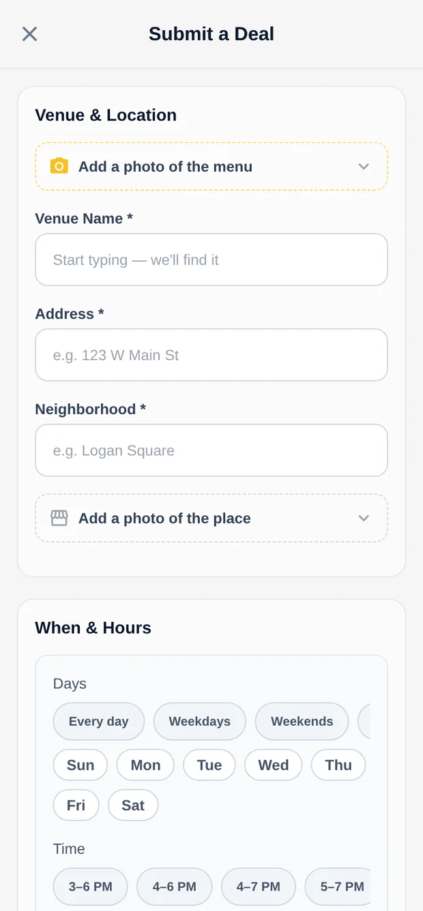
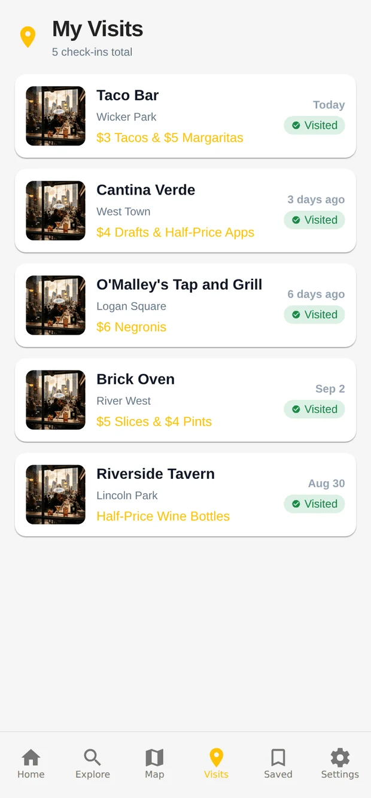
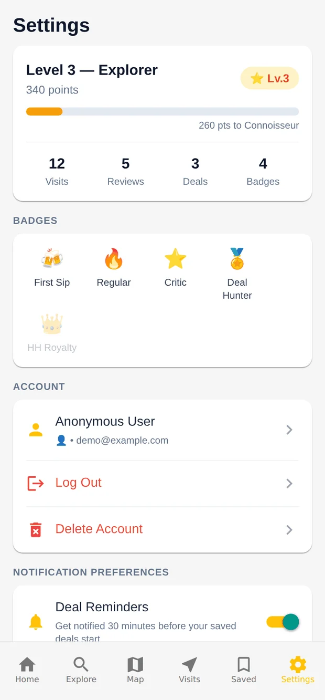

Pending over wrong
Anything uncertain waits for review, so coverage grows more slowly. For a discovery app, a missing deal costs less than a wrong one that sends someone across town.
Designing a discovery product where the hardest part isn't finding deals. It's knowing when to trust them.



Restaurant specials are scattered across menus, websites, social posts, and schedules that change without notice. A discovery app can feel simple on the surface while hiding a hard data problem underneath.
So the goal grew past "show nearby deals." The app has to help someone answer: What's happening, where is it, when does it end, and how sure can I be that it's still true?
The core flow goes from discovery to filtering to deal detail to an actual visit. Daily Highlights surfaces trending, new, and ending-soon deals. Explore adds server-side full-text search plus filters for neighborhood, deal type, price, and time of day.
Deals aren't hand-curated. A set of 11 n8n workflows discovers venues, reads happy hours off their websites, re-checks every live deal nightly, and sends anything uncertain to a person before it reaches the app. Every source goes through one intake endpoint, so dedupe, geocoding, and the publish decision each live in exactly one place.
The guardrails are enforced in SQL, not in the workflows, so they hold no matter what an LLM returns or what a scraped page says:
Every network read and write goes through the services layer. Row Level Security enforces authorization in the database, and privileged actions like awarding points run through narrowly scoped server-side functions instead of broad client permissions.
That keeps business-critical rules out of the UI and makes each layer testable on its own.
Screen behavior lives in hooks, so most logic can be tested without rendering native maps or camera flows. The code inside the n8n workflows is mirrored in the repo and regression-tested too. The app also handles the unhappy paths: cached reads, offline banners, skeleton loading, error boundaries, and a clear screen when configuration is missing.



Anything uncertain waits for review, so coverage grows more slowly. For a discovery app, a missing deal costs less than a wrong one that sends someone across town.
The guardrails hold whatever an LLM or scraper returns. The cost: that logic is slower to change than an n8n node and needs migrations and its own tests.
Every source takes the same path, which adds some plumbing. In return, adding a new source means pointing it at one webhook, not re-implementing dedupe.
A happy hour whose hours change by day is stored as a group of rows, not one clever string. Queries stay simple, but the pipeline needs guards so a reading for one sibling can't overwrite another.
Happy Hour Finder started as a local discovery idea and turned into a systems-design exercise: how do you combine messy outside information, automation, user-generated data, security, and a consumer app without making the user absorb the complexity?